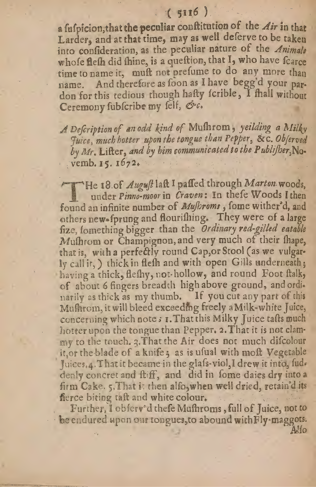

Some Observations about Shining Flesh, made by the Honourable Robert Boyle; Febr. 15. 16. and by way of Letter addressed to the Publisher, and presented to the R. So. society.
Efternight when I was about to go to bed, an Ama-nuensis of mine, accustom’d to make Observations, informed me, that one of the Servants of the house, going upon some occasion into the Larder, was frighted by something of Luminous that she saw (notwithstanding the darkness of the place,) where the meat had been hung up before: Whereupon suspending for a while my going to rest, I presently sent for the meat into my Chamber, and caused it to be placed in a corner of the room capable of being made considerably dark, and then I plainly saw, both with wonder and delight, that the joint of meat did in divers places shine like rotten Wood or stinking Fish; which was so uncommon a sight, that I had presently thoughts of inviting you to be a sharer in the pleasure of it. But the late hour of the night did not only make me fear to give you too unseasonable a trouble, but being joyned with a great Cold I had got that day by making Tryal of a new Telescope (you saw,) in a windy place, I durst not sit up long enough to make all the tryals that I thought of and judg’d the occasion worthy of. But yet, because I effectually resolved to employ the little time I had to spare, in making such Observations and tryals, as the accommodations, I could procure at so inconvenient an hour, would enable me, I shall here give you a brief account of the chief circumstances and Phenomena, that I had opportunity to take notice of.
1. Then I must tell you, that the subject, we discourse of, was a Neck of Veal, which, as I learned by inquiry, had been bought of a Country-butcher on the Tuesday preceding.
Experiment 1
Description: The experiment involved observing the luminous properties of a veal neck that had been hung in a dark room. The author noted that the meat emitted a faint glow resembling that of rotten wood or stinking fish, likely due to biochemical processes (e.g., bacterial activity or chemical decomposition).
Reasoning: The passage describes a deliberate observation of a luminous phenomenon in a meat joint (veal neck) under controlled conditions (darkened room). The author describes specific procedures (placing the meat in a dark corner, observing its luminous properties), which aligns with the definition of an experiment.
Outcome: The meat exhibited a luminous phenomenon, though the exact cause or mechanism was not explicitly detailed in the passage.
Location:A darkened corner of the author’s chamber (room)
Page 2
2. In this one piece of meat I reckoned distinctly above twenty several places that did all of them shine, though not all of them alike, some of them doing it but very faintly.
3. The bigness of these Lucid parts was differing enough, some of them being as big as the nail of a mans middle finger, some few bigger, and most of them less. Nor were there figures at all more uniform, some being inclined to a round, others almost oval, but the greatest part of them very irregularly shap'd.
4. The parts that shone most, which it was not so easy to determine in the dark, were some gristly or soft parts of the bones, where the Butcher's Cleaver had passed; but these were not the only parts that were luminous; for by drawing to and fro the Medulla spinalis, we found, that a part of that also did not shine ill: And I perceived one place in a Tendon to afford some light; and lastly three or four spots in the fleshy parts at a good distance from the bones were plainly discovered by their own light, though that were fainter than in the parts above mentioned.
5. When all these Lucid parts were survey'd together, they made a very splendid shew; but it was not so easy, because of the moistness and grossness of the lump of matter, to examine the degree of their Luminousness, as it is to estimate that of Gloworms, which being small and dry bodies may be conveniently laid in a book, and made to move from one letter or word to another. But by good fortune having by me the curious Transactions of this month, I was able so to apply that flexible paper to some of the more resplendent spots, that I could plainly read divers consecutive letters of the Title.
6. The Colour that accompanied the light was not in all the same, but in those which shone liveliest, it seemed to have such a fine Greenish blew, as I have divers times observed in the tails of Gloworms.
Nn nn n 2
7. But
Experiment 2
Description: The author observed and systematically documented multiple luminous spots on a piece of meat. The experiment involved measuring the size, shape, and luminosity of these spots, attempting to isolate and examine them by manipulating the meat (e.g., drawing the spinal medulla) and using flexible paper to read letters from the luminous regions. The goal appears to be characterizing the nature of these luminous phenomena.
Reasoning: The passage describes a systematic observation of luminous spots on a piece of meat, including measurements of size, shape, and location. It mentions specific procedures (e.g., drawing the spinal medulla, examining tendons and fleshy parts), apparatus (e.g., flexible paper for reading letters), and attempts to quantify luminosity, which aligns with the definition of an experiment.
Outcome: The author noted the diversity in luminosity and color (e.g., greenish-blue) of the spots, but did not explicitly state a definitive outcome. The experiment seems to have been exploratory, focusing on describing the phenomenon rather than proving a hypothesis.
Location:Null (not explicitly mentioned)
Page 3
7. But notwithstanding the vividness of this Light, I could not by the touch discern the least degree of Heat in the parts whence it proceeded; and having put some marks on one or two of the more shining places, that I might know them again when brought to the light, I applied a seal’d Weather glass, furnished with tincted spirit of wine, for a pretty while, and could not satisfy my self, that the shining parts did at all sensibly warm the liquor: But the Thermoscope, though good in its kind, being not fitted for such nice Experiments, I did not build much upon that tryal.
8. Notwithstanding the great number of lucid parts in this Neck of Veal, yet neither I, nor any of those that were about me, could perceive by the smell the least degree of stink, whence to infer any Putrefaction; the meat being judged very fresh and well condition’d and fit to be dressed.
9. The floar of the Larder, where this meat was kept, is almost a story lower then the level of the street, and ’tis divided from the Kitchen but by a partition of boards, and is furnished but with one window, which is not great, and looks toward the street, which lies North-ward from it.
10. The wind, as far as we could observe it, was then at Southwest, and blustering enough. The Air by the seal’d Thermoscope appeared hot for the season. The Moon was past its last Quarter. The Mercury in the Barometer stood at $29\frac{3}{16}$ inches.
11. We cut off with a knife one of the luminous parts, which proved to be a tender bone, and being of about the thickness of a half Crown piece, appeared to shine on both sides though not equally; and that part of the bone, whence this had been cut off, continued joined to the rest of the Neck of Veal, and was seen to shine, but nothing near so vividly as the part, we had taken off, did before.
12. To
Experiment 3
Description: The experiment involved placing a sealed thermoscope with tinctured spirit of wine near a luminous part of a candle or similar light source. The author aimed to determine whether the light emitted by the luminous part caused any measurable warming of the spirit within the thermoscope.
Reasoning: The passage describes a deliberate procedure involving the use of a sealed thermometer (thermoscope) to measure heat in a luminous object (likely a candle or similar light source). The author attempts to observe and record changes in temperature using a specific apparatus (tinctured spirit of wine in a sealed glass), which fits the criteria of an experiment.
Outcome: Null (the author did not find a significant warming effect)
Location:Null (not explicitly mentioned)
Experiment 4
Description: The author and associates smelled a piece of veal (labeled as
Reasoning: This passage describes an observation of a putrefying meat sample, where the author and others attempt to detect any smell of decomposition despite the meat appearing fresh. This is a controlled observation to infer the absence of putrefaction.
Experiment 5
Description: The passage describes the physical layout of the larder where the meat was kept, including its height relative to the street, the partition separating it from the kitchen, and the window’s orientation.
Reasoning: This is not an experiment but a contextual observation about the environment and conditions of the meat storage area.
Location:Larder (specific location not detailed beyond the general description)
Experiment 6
Description: The author and associates recorded the wind direction (Southwest), atmospheric temperature (as measured by the thermoscope), moon phase, and barometric pressure (Mercury at 29 3/16 inches). This is part of a broader environmental observation.
Reasoning: This passage describes a deliberate observation of the wind direction, atmospheric conditions, and barometric pressure, which are part of a broader environmental setup. While not explicitly an experiment, it provides contextual environmental data that could be part of a larger observational study.
Location:Null (general observation)
Experiment 7
Description: The author cut a piece of luminous bone from the neck of veal, which was about the thickness of a half crown piece. The luminous part was compared to the rest of the bone to observe differences in brightness.
Reasoning: The passage describes a deliberate procedure involving cutting a piece of luminous bone from the veal neck and observing its properties. This is a controlled observation to compare the luminous properties of the cut part with the rest of the bone.
Outcome: The cut part shone more vividly than the remaining part of the bone
Location:Null (not explicitly mentioned)
Page 4
12. To try, whether I could obtain any juice or moist substance from this, as I have several times done from the tails of Gloworms; I rub’d some of the softer and more lucid parts, (which I caused to be purposely cut off,) as dextrously as I could, upon my hand, but I did not at all perceive any luminous moisture was thereby imparted; though the flesh seemed by that operation to have lost some of its light.
13. I caused also a piece of shining flesh to be compressed betwixt two pieces of glass, to try, how well the contexture of it would resist that external force; but I did not find the light to be thereby extinguished during the short time I could allot to the Experiment.
14. But supposing, that high rectified Spirit of wine might so alter the contexture of the body it permeated, as to destroy its faculty of Shining, I put a luminous piece of Veal into a Crystalline phial, and pouring on it a little pure Spirit of wine that would have burned all away, after I had shaken them together, I laid by the glass, and in about a quarter of an hour or less I found that the light was vanished.
15. But water would not so easily quench our seeming fires; for having put one of them into a China Cup, and almost filled it with cold water, the light did not only appear, perhaps undiminished, through that Liquor, but above an hour after was vigorous enough not to be eclipsed by being looked upon at no great distance from a burning Candle, that was none of the smallest; and probably the light would have been seen much longer, if we could have afforded to watch out its duration.
16. Whilst these things were doing, I caused the Pneumatical Engine to be prepared in a room without fire, (that the Experiment might be tryed in a greater degree of darkness;) and having conveyed one of the largest luminous pieces into a small Receiver, we caused the candles to be put out, and the pump to be plied in the dark; but the
Experiment 8
Description: The experiment involved placing a large piece of luminous material into a small receiver and using a pneumatical engine (likely a vacuum pump) to create suction in a dark room. The goal was to observe how the luminous substance behaved under reduced pressure.
Reasoning: The passage describes a deliberate procedure involving a specific apparatus (a 'Pneumatical Engine'), systematic manipulation of a luminous substance, and observation under controlled conditions (darkness). The use of a 'Receiver' and 'pump' suggests a mechanical intervention to study the luminous substance's behavior.
Outcome: The outcome is not explicitly stated in the provided text. The experiment was conducted to observe the luminous substance's behavior under altered atmospheric conditions (likely reduced pressure), but no specific result is mentioned.
Location:A room prepared for the experiment, likely within the laboratory or a designated space in the Royal Society's facilities.
Individuals:The author and unnamed collaborators (referred to as 'we')
Page 5
the diminution of light, after the pump seemed to have been employed for a competent while, appeared so inconsiderable, (whether because our eyes had leisure to be fitted to that dark place, or for what other cause soever,) that I began to suspect, that the instrument, having been managed in the dark, had leaked all the while. Wherefore causing the lights to be brought in, and a Mercurial Gage to be put into the Receiver; when we were sure that this glass was well cemented on to the Engine, the Candles being removed, the pump was set a work again; and then opening my eyes, which I had kept clos'd against the light of the Candles, I could perceive, upon the gradual withdrawing of the Air, a discernible and gradual lessening of the light; which yet was never brought quite to disappear (as I long since told you the light of Rotten Wood and Gloworms had done,) or to be so near vanishing as one would have expected; though upon the bringing in of the Candles again it appeared by the Gage, that the Pump had been diligently applied. But the room being once again darkened; by the hafty increase of light, that had disclosed it self in the Veal upon this letting in of the Air to the Exhausted Receiver, it appeared more manifestly than before, that the decrement, though but slowly made, had been considerable. This tryal we once more repeated with a not unlike success; which though it convinced us, that the Luminous matter of our included body was more vigorous or tenacious than that of most other shining bodies; yet it left us some doubts, that the light would have been much more impaired, if not quite made to vanish, if the subject of it could have been kept long enough in our Exhausted Receiver: But the unseasonable time of the night reducing me at length to go to bed, I could not stay to prosecute this or any other tryal.
17. Only, whilst I was undressing, this further Observation occurred, that supposing there might be in the same Larder more joints of the same Veal than one, innobled with
Experiment 9
Description: The experiment involved using a vacuum pump to exhaust air from a receiver containing veal (or possibly glowworms/rotten wood, previously mentioned). The author observed the gradual decrease in light intensity as air was progressively removed from the receiver. The experiment was repeated with a mercurial gage to confirm the pump’s effectiveness and to verify that the light reduction was not due to leakage. The author also noted the effect of reintroducing light (candles) and air on the observed phenomenon.
Reasoning: The passage describes a deliberate procedure involving a pump, a receiver, a mercurial gage, and systematic observations of light diminution over time. The author repeatedly manipulates the environment (darkening/lightening the room, using candles, and reintroducing air) to test the consistency and validity of the observations.
Outcome: The light diminished gradually but did not completely vanish, suggesting that the luminous matter in the veal was more tenacious or vigorous than in other substances (e.g., glowworms or rotting wood). The experiment also confirmed that the pump was functioning correctly, as evidenced by the mercurial gage.
Location:The experiment took place in the author's own room or laboratory (implied by 'this Receiver' and 'the Engine').
Page 6
with this shining faculty, it was found, that a Legg of Veal, which was caused to be brought into my Chamber, had some shining places in it; though they were but very few and faint in comparison of those, that were conspicuous in the above-mentioned Neck.
18. What further Phenomena this morning might have afforded me, I cannot tell, having been hastily called up before day for a Niece, that I am very justly and exceedingly concerned for, who was thought to be upon the point of death, and whose almost gasping condition had too much affected and employed me, to leave me any time for Philosophical entertainments, that require a calm, if not a pleased, mind. Only this I took notice of, because the observation could not cost me a minute of an hour, that whilst they were bringing me Candles for to rise by, I looked upon a clean phial, that I had laid upon the bed by me after a piece of our luminous Veal had been included in it, and found it to shine vividly at that time, which was between four and five of clock this morning, since when I have made no one observation or tryal.
POSTSCRIPT.
19. Near two days after I had made the forementioned Observations, those horrid symptoms of my Niece's disease, that had so much allarmed the Physitians and me, being through Gods goodness considerably abated, I began to refume the thoughts of our Shining Veal, and though, having in the hurry I was in forgotten to take any order about it, I found it was already disposed of; yet the piece, I lately mentioned to have been included in a phial, being preserved in it, I looked upon it the third day (inclusively) after we had first observed the meat, 'twas cut off from, to be luminous; and I found it to shine in the dark as vigorously as ever. The fourth day its light was also conspicuous, so that I was able in a dark Corner of the room to shew it
Experiment 10
Description: Luminous Veal
Reasoning: The author observed the luminous property of a piece of veal that had been preserved in a phial after being exposed to light (from the
Experiment 11
Description: The experiment involved observing the luminous properties of a piece of veal initially exposed to light and then preserved in a phial. The author noted the shining of the preserved piece in the dark over multiple days.
Reasoning: The author initially noticed the faint luminosity of the veal in daylight and later systematically observed the preserved piece in a phial to confirm and study its continued luminous behavior over several days.
Outcome: The preserved piece of veal continued to shine vividly in the dark for at least four days.
Location:Chamber (initial observation) and a dark corner of the room (later observations)
Experiment 12
Description: Initial observation of luminous spots on a piece of veal brought into the chamber.
Reasoning: The author’s immediate observation of the glowing spots on the veal upon bringing it into the chamber.
Location:Chamber
Page 7
it even in the day time to three or four very ingenious Physitians, all of them (save one) members of the R. Society; and I presume I need not remind you, that the following night I invited you to be a spectator of it, though before that time the light had begun to decay and the ofensive smell to grow somewhat strong: which seems to argue, that the disposition, upon whose account our Veal was luminous, may very well consist both with its being and not being in a state of putrefaction, and consequently is not likely to be derived meerly from the one or the other. The fifth day, in the morning looking upon it when I awaked, and before the curtains were opened, it seemed to shine better than it had done the day preceding. The same night also it was manifest enough, though not vivid, in the dark. When I awaked, the sixth day in the morning after the Sun was risen, I could within the Curtain perceive a glimmering light. But the seventh day, which was yesterday, I could not late at night discern any light at all.
You saw too much in what a condition I was, when you did me the favour to visit me, to expect that I should presume to entertain you with any Speculations about the cause of these unusual apparitions of light. 'Tis true indeed, that in some notes, I formerly mentioned to you, I endeavoured to make it probable, that whether Light depend upon a particular kind of Impulse propagated through a transparent Medium; or upon a Diffusion of extremely little parts from the Luminous body; or upon the Action of some other corporeal agent; what ever the Effcient be, the Effect is produced in a Mechanical way. But though I had these papers by me; yet to determine what peculiar Kind of motions or other operations Nature really imployed in the production of a light, which seemed not clearly (by what I shall presently note) referable either to the particular and setled constitution of the Animals, whose flesh shined, (as in our Gloworms and some American Flies)
Experiment 13
Description: The experiment involved observing the luminous properties of a preserved animal (possibly a veal or calf) over several days. The author recorded how the light emitted by the animal changed in intensity and visibility during different times—daylight, darkness, and after the animal was exposed to light sources (e.g., the sun). The goal appears to be investigating the nature of the light (e.g., whether it was due to decay, putrefaction, or another mechanism).
Reasoning: The passage describes a systematic observation of a luminous phenomenon in a preserved animal (likely a veal or calf) over multiple days, including measurements of light intensity, time of observation, and environmental conditions (e.g., daylight, darkness). The author explicitly mentions repeated observations and notes changes in the light over time, which aligns with the definition of an experiment.
Outcome: The light appeared to fade over time, with the author noting that the animal was no longer luminous by the seventh day. The smell of putrefaction also grew stronger, suggesting a correlation between the decay of the animal and the diminishing light.
Location:The experiment took place indoors, likely in the author's residence (implied by phrases like 'within the Curtain' and 'when I awaked').
Page 8
or to that intestine and unusual motion of the parts, that causes or accompanies Putrefaction in Rotten Wood or Fishes; since upon the first and liveliest appearance of the Light, there was not any (at least that could be taken notice of by the senses:) To determine this, I say, it seem’d to me so difficult a task, that I shall willingly leave the Solution of such abstruse Phenomenas as some of ours, unattempted; especially since I may, God permitting, make an Historical mention of them the day after to morrow at the Meeting of the Royal Society; where I doubt not much more and more to the purpose will be said and consider’d, than I have vanity to think myself capable of offering. Only, for the prevention of some needless conjectures, to which without this previous Advertisement one might upon plausible grounds indulge, I shall in the mean while add and conclude with one Observation more, which may possibly take off our thoughts from striving to deduce the Shining of our Veal from the peculiar nourishment, or constitution, or properties of that individual Calf, whose flesh, etc. was luminous. For, having several nights sent purpoely into the Larder, to observe, whether any Veal, since brought thither, or any other meat, did afford any light, a negative answer was alwaies brought me back; save at one time, which happened to be within less than 48 hours of that, at which the Luminousness of the Veal had been first taken notice of; for at this time there was in the same Larder a conspicuous light seen in a Pullet, that hung up there, which having caus’d to be brought up into a darkned place in my chamber in the night time, I perceived four or five luminous places, which were not indeed near so large as those of the Veal, but were little less vivid than they. All of these I took notice to be either upon or near the Rump, and that, which appear’d most like a Spark of Fire, shone at the very tip of that part. Yet was not this Foul mortified, nor at all ill-sented, but so fresh, that the next day I found it very good meat. But whether this may reasonably lead to
Experiment 14
Description: The experiment involved observing a pullet (young hen) that exhibited a light source in its rump region. The author took the pullet from the larder, brought it into a darkened chamber, and noted the luminous spots near or on the rump. The goal was to compare this phenomenon to the earlier observation of luminous veal and to determine whether the light was related to the freshness or other properties of the meat.
Reasoning: The passage describes a deliberate procedure involving systematic observation of a phenomenon (the luminous appearance in a pullet) under controlled conditions (darkened chamber) to investigate its cause and compare it to another observed phenomenon (the luminousness of veal). The author explicitly mentions sending meat into the larder and observing its behavior over time, which aligns with the definition of an experiment.
Outcome: The luminous spots in the pullet were observed, though not as vivid as those in the veal. The pullet was fresh and not foul or ill-sent, indicating that the light was not due to decay or spoilage.
Location:Larder (mentioned in the text) and a darkened chamber in the author's chamber.
Page 9
a suspicion, that the peculiar constitution of the Air in that Larder, and at that time, may as well deserve to be taken into consideration, as the peculiar nature of the Animals whose flesh did shine, is a question, that I, who have scarce time to name it, must not presume to do any more than name. And therefore as soon as I have begg'd your pardon for this tedious though hafty scrible, I shall without Ceremony subscribe my self, &c.
Experiment 15
Description: This passage hints at an early observation of how environmental factors (such as air quality) might affect biological properties (in this case, the luminosity or shine of animal flesh). It sets up a curiosity about the role of the larder’s air in this phenomenon.
Reasoning: The author suspects that the unusual appearance of the animals' flesh in the larder may be influenced by the specific atmospheric conditions (the peculiar constitution of the air) rather than solely by the nature of the animals themselves.
Page 9

The 18. of August last I passed through Marton woods, under Pinno-moor in Craven: In these Woods I then found an infinite number of Mushrooms, some wither'd, and others new-sprung and flourishing. They were of a large size, something bigger than the Ordinary red-gilled eatable Mushroom or Champignon, and very much of their shape, that is, with a perfectly round Cap, or Stool (as we vulgarly call it,) thick in flesh and with open Gills underneath; having a thick, fleshy, not-hollow, and round Foot-stalk, of about 6 fingers breadth high above ground, and ordinarily as thick as my thumb. If you cut any part of this Mushroom, it will bleed exceeding freely a Milk-white Juice, concerning which note; 1. That this Milky Juice tastes much hotter upon the tongue than Pepper. 2. That it is not clammy to the touch. 3. That the Air does not much discolour it, or the blade of a knife; as is usual with most Vegetable Juices. 4. That it became in the glass-viol, I drew it into, suddenly concret and stiff, and did in some daies dry into a firm Cake. 5. That it then also, when well dried, retain'd its fierce biting tast and white colour.
Further, I observ'd these Mushrooms, full of Juice, not to be endured upon our tongues, to abound with Fly-maggots.
Experiment 16
Description: Observation of a large, unusual mushroom species with distinct morphological features and unusual properties, including a thick, fleshy stalk, a round cap, and a white, milk-like juice when cut. The author also noted the presence of maggots within the mushrooms.
Reasoning: The author observed unusual mushroom growth in Marton Woods, likely to investigate their unusual properties and potential biological or chemical characteristics.
Outcome: The juice's properties were noted to be hotter than pepper, not clammy, and it congealed in a glass vial, drying into a firm cake while retaining its sharp taste and white appearance.
Location:Marton Woods, under Pinno-moor in Craven
Experiment 17
Description: Testing the juice’s taste, texture, and behavior when exposed to air and drying.
Reasoning: Investigation of the physical and chemical properties of the mushroom’s juice to understand its behavior under different conditions (e.g., taste, texture, and concretion).
Outcome: The juice congealed and hardened in a glass vial, drying into a firm cake while retaining its sharp taste and white appearance.
Experiment 18
Description: Observation of maggots inside the mushrooms, indicating potential decomposition or breeding activity.
Reasoning: Observation of the presence of maggots within the mushrooms, likely to study their impact or implications on the organism.
Location:Marton Woods, under Pinno-moor in Craven
Full Article
--- page 1 ---
Some Observations about Shining Flesh, made by the Honourable Robert Boyle; Febr. 15. 16. and by way of Letter addressed to the Publisher, and presented to the R. So. society.
Efternight when I was about to go to bed, an Ama-nuensis of mine, accustom’d to make Observations, informed me, that one of the Servants of the house, going upon some occasion into the Larder, was frighted by something of Luminous that she saw (notwithstanding the darkness of the place,) where the meat had been hung up before: Whereupon suspending for a while my going to rest, I presently sent for the meat into my Chamber, and caused it to be placed in a corner of the room capable of being made considerably dark, and then I plainly saw, both with wonder and delight, that the joint of meat did in divers places shine like rotten Wood or stinking Fish; which was so uncommon a sight, that I had presently thoughts of inviting you to be a sharer in the pleasure of it. But the late hour of the night did not only make me fear to give you too unseasonable a trouble, but being joyned with a great Cold I had got that day by making Tryal of a new Telescope (you saw,) in a windy place, I durst not sit up long enough to make all the tryals that I thought of and judg’d the occasion worthy of. But yet, because I effectually resolved to employ the little time I had to spare, in making such Observations and tryals, as the accommodations, I could procure at so inconvenient an hour, would enable me, I shall here give you a brief account of the chief circumstances and Phenomena, that I had opportunity to take notice of.
1. Then I must tell you, that the subject, we discourse of, was a Neck of Veal, which, as I learned by inquiry, had been bought of a Country-butcher on the Tuesday preceding.
--- page 2 ---
2. In this one piece of meat I reckoned distinctly above twenty several places that did all of them shine, though not all of them alike, some of them doing it but very faintly.
3. The bigness of these Lucid parts was differing enough, some of them being as big as the nail of a mans middle finger, some few bigger, and most of them less. Nor were there figures at all more uniform, some being inclined to a round, others almost oval, but the greatest part of them very irregularly shap'd.
4. The parts that shone most, which it was not so easy to determine in the dark, were some gristly or soft parts of the bones, where the Butcher's Cleaver had passed; but these were not the only parts that were luminous; for by drawing to and fro the Medulla spinalis, we found, that a part of that also did not shine ill: And I perceived one place in a Tendon to afford some light; and lastly three or four spots in the fleshy parts at a good distance from the bones were plainly discovered by their own light, though that were fainter than in the parts above mentioned.
5. When all these Lucid parts were survey'd together, they made a very splendid shew; but it was not so easy, because of the moistness and grossness of the lump of matter, to examine the degree of their Luminousness, as it is to estimate that of Gloworms, which being small and dry bodies may be conveniently laid in a book, and made to move from one letter or word to another. But by good fortune having by me the curious Transactions of this month, I was able so to apply that flexible paper to some of the more resplendent spots, that I could plainly read divers consecutive letters of the Title.
6. The Colour that accompanied the light was not in all the same, but in those which shone liveliest, it seemed to have such a fine Greenish blew, as I have divers times observed in the tails of Gloworms.
Nn nn n 2
7. But
--- page 3 ---
7. But notwithstanding the vividness of this Light, I could not by the touch discern the least degree of Heat in the parts whence it proceeded; and having put some marks on one or two of the more shining places, that I might know them again when brought to the light, I applied a seal’d Weather glass, furnished with tincted spirit of wine, for a pretty while, and could not satisfy my self, that the shining parts did at all sensibly warm the liquor: But the Thermoscope, though good in its kind, being not fitted for such nice Experiments, I did not build much upon that tryal.
8. Notwithstanding the great number of lucid parts in this Neck of Veal, yet neither I, nor any of those that were about me, could perceive by the smell the least degree of stink, whence to infer any Putrefaction; the meat being judged very fresh and well condition’d and fit to be dressed.
9. The floar of the Larder, where this meat was kept, is almost a story lower then the level of the street, and ’tis divided from the Kitchen but by a partition of boards, and is furnished but with one window, which is not great, and looks toward the street, which lies North-ward from it.
10. The wind, as far as we could observe it, was then at Southwest, and blustering enough. The Air by the seal’d Thermoscope appeared hot for the season. The Moon was past its last Quarter. The Mercury in the Barometer stood at $29\frac{3}{16}$ inches.
11. We cut off with a knife one of the luminous parts, which proved to be a tender bone, and being of about the thickness of a half Crown piece, appeared to shine on both sides though not equally; and that part of the bone, whence this had been cut off, continued joined to the rest of the Neck of Veal, and was seen to shine, but nothing near so vividly as the part, we had taken off, did before.
12. To
--- page 4 ---
12. To try, whether I could obtain any juice or moist substance from this, as I have several times done from the tails of Gloworms; I rub’d some of the softer and more lucid parts, (which I caused to be purposely cut off,) as dextrously as I could, upon my hand, but I did not at all perceive any luminous moisture was thereby imparted; though the flesh seemed by that operation to have lost some of its light.
13. I caused also a piece of shining flesh to be compressed betwixt two pieces of glass, to try, how well the contexture of it would resist that external force; but I did not find the light to be thereby extinguished during the short time I could allot to the Experiment.
14. But supposing, that high rectified Spirit of wine might so alter the contexture of the body it permeated, as to destroy its faculty of Shining, I put a luminous piece of Veal into a Crystalline phial, and pouring on it a little pure Spirit of wine that would have burned all away, after I had shaken them together, I laid by the glass, and in about a quarter of an hour or less I found that the light was vanished.
15. But water would not so easily quench our seeming fires; for having put one of them into a China Cup, and almost filled it with cold water, the light did not only appear, perhaps undiminished, through that Liquor, but above an hour after was vigorous enough not to be eclipsed by being looked upon at no great distance from a burning Candle, that was none of the smallest; and probably the light would have been seen much longer, if we could have afforded to watch out its duration.
16. Whilst these things were doing, I caused the Pneumatical Engine to be prepared in a room without fire, (that the Experiment might be tryed in a greater degree of darkness;) and having conveyed one of the largest luminous pieces into a small Receiver, we caused the candles to be put out, and the pump to be plied in the dark; but the
--- page 5 ---
the diminution of light, after the pump seemed to have been employed for a competent while, appeared so inconsiderable, (whether because our eyes had leisure to be fitted to that dark place, or for what other cause soever,) that I began to suspect, that the instrument, having been managed in the dark, had leaked all the while. Wherefore causing the lights to be brought in, and a Mercurial Gage to be put into the Receiver; when we were sure that this glass was well cemented on to the Engine, the Candles being removed, the pump was set a work again; and then opening my eyes, which I had kept clos'd against the light of the Candles, I could perceive, upon the gradual withdrawing of the Air, a discernible and gradual lessening of the light; which yet was never brought quite to disappear (as I long since told you the light of Rotten Wood and Gloworms had done,) or to be so near vanishing as one would have expected; though upon the bringing in of the Candles again it appeared by the Gage, that the Pump had been diligently applied. But the room being once again darkened; by the hafty increase of light, that had disclosed it self in the Veal upon this letting in of the Air to the Exhausted Receiver, it appeared more manifestly than before, that the decrement, though but slowly made, had been considerable. This tryal we once more repeated with a not unlike success; which though it convinced us, that the Luminous matter of our included body was more vigorous or tenacious than that of most other shining bodies; yet it left us some doubts, that the light would have been much more impaired, if not quite made to vanish, if the subject of it could have been kept long enough in our Exhausted Receiver: But the unseasonable time of the night reducing me at length to go to bed, I could not stay to prosecute this or any other tryal.
17. Only, whilst I was undressing, this further Observation occurred, that supposing there might be in the same Larder more joints of the same Veal than one, innobled with
--- page 6 ---
with this shining faculty, it was found, that a Legg of Veal, which was caused to be brought into my Chamber, had some shining places in it; though they were but very few and faint in comparison of those, that were conspicuous in the above-mentioned Neck.
18. What further Phenomena this morning might have afforded me, I cannot tell, having been hastily called up before day for a Niece, that I am very justly and exceedingly concerned for, who was thought to be upon the point of death, and whose almost gasping condition had too much affected and employed me, to leave me any time for Philosophical entertainments, that require a calm, if not a pleased, mind. Only this I took notice of, because the observation could not cost me a minute of an hour, that whilst they were bringing me Candles for to rise by, I looked upon a clean phial, that I had laid upon the bed by me after a piece of our luminous Veal had been included in it, and found it to shine vividly at that time, which was between four and five of clock this morning, since when I have made no one observation or tryal.
POSTSCRIPT.
19. Near two days after I had made the forementioned Observations, those horrid symptoms of my Niece's disease, that had so much allarmed the Physitians and me, being through Gods goodness considerably abated, I began to refume the thoughts of our Shining Veal, and though, having in the hurry I was in forgotten to take any order about it, I found it was already disposed of; yet the piece, I lately mentioned to have been included in a phial, being preserved in it, I looked upon it the third day (inclusively) after we had first observed the meat, 'twas cut off from, to be luminous; and I found it to shine in the dark as vigorously as ever. The fourth day its light was also conspicuous, so that I was able in a dark Corner of the room to shew it
--- page 7 ---
it even in the day time to three or four very ingenious Physitians, all of them (save one) members of the R. Society; and I presume I need not remind you, that the following night I invited you to be a spectator of it, though before that time the light had begun to decay and the ofensive smell to grow somewhat strong: which seems to argue, that the disposition, upon whose account our Veal was luminous, may very well consist both with its being and not being in a state of putrefaction, and consequently is not likely to be derived meerly from the one or the other. The fifth day, in the morning looking upon it when I awaked, and before the curtains were opened, it seemed to shine better than it had done the day preceding. The same night also it was manifest enough, though not vivid, in the dark. When I awaked, the sixth day in the morning after the Sun was risen, I could within the Curtain perceive a glimmering light. But the seventh day, which was yesterday, I could not late at night discern any light at all.
You saw too much in what a condition I was, when you did me the favour to visit me, to expect that I should presume to entertain you with any Speculations about the cause of these unusual apparitions of light. 'Tis true indeed, that in some notes, I formerly mentioned to you, I endeavoured to make it probable, that whether Light depend upon a particular kind of Impulse propagated through a transparent Medium; or upon a Diffusion of extremely little parts from the Luminous body; or upon the Action of some other corporeal agent; what ever the Effcient be, the Effect is produced in a Mechanical way. But though I had these papers by me; yet to determine what peculiar Kind of motions or other operations Nature really imployed in the production of a light, which seemed not clearly (by what I shall presently note) referable either to the particular and setled constitution of the Animals, whose flesh shined, (as in our Gloworms and some American Flies)
--- page 8 ---
or to that intestine and unusual motion of the parts, that causes or accompanies Putrefaction in Rotten Wood or Fishes; since upon the first and liveliest appearance of the Light, there was not any (at least that could be taken notice of by the senses:) To determine this, I say, it seem’d to me so difficult a task, that I shall willingly leave the Solution of such abstruse Phenomenas as some of ours, unattempted; especially since I may, God permitting, make an Historical mention of them the day after to morrow at the Meeting of the Royal Society; where I doubt not much more and more to the purpose will be said and consider’d, than I have vanity to think myself capable of offering. Only, for the prevention of some needless conjectures, to which without this previous Advertisement one might upon plausible grounds indulge, I shall in the mean while add and conclude with one Observation more, which may possibly take off our thoughts from striving to deduce the Shining of our Veal from the peculiar nourishment, or constitution, or properties of that individual Calf, whose flesh, etc. was luminous. For, having several nights sent purpoely into the Larder, to observe, whether any Veal, since brought thither, or any other meat, did afford any light, a negative answer was alwaies brought me back; save at one time, which happened to be within less than 48 hours of that, at which the Luminousness of the Veal had been first taken notice of; for at this time there was in the same Larder a conspicuous light seen in a Pullet, that hung up there, which having caus’d to be brought up into a darkned place in my chamber in the night time, I perceived four or five luminous places, which were not indeed near so large as those of the Veal, but were little less vivid than they. All of these I took notice to be either upon or near the Rump, and that, which appear’d most like a Spark of Fire, shone at the very tip of that part. Yet was not this Foul mortified, nor at all ill-sented, but so fresh, that the next day I found it very good meat. But whether this may reasonably lead to
--- page 9 ---
a suspicion, that the peculiar constitution of the Air in that Larder, and at that time, may as well deserve to be taken into consideration, as the peculiar nature of the Animals whose flesh did shine, is a question, that I, who have scarce time to name it, must not presume to do any more than name. And therefore as soon as I have begg'd your pardon for this tedious though hafty scrible, I shall without Ceremony subscribe my self, &c.
Experiment 1
Description: Observation of a neck of veal that exhibited luminous spots in the dark, despite its fresh appearance. The author tests various conditions (pressure, exposure to liquids, vacuum) to understand the nature of the light.
Reasoning: To investigate the luminous properties of meat, particularly veal, and determine whether the light is due to putrefaction, mechanical pressure, or other factors.
Outcome: The light persisted in water for over an hour and was only extinguished by high-proof alcohol. The vacuum experiment showed a gradual decrease in light intensity, suggesting the luminous matter was more tenacious than that of other glowing substances.
Location:Author's chamber, Larder (a lower room in the house, separated from the kitchen by boards, with a small window facing northward).
Experiment 2
Description: The author identified distinct luminous spots in the veal, including gristly parts of bones, the spinal medulla, tendons, and fleshy areas. He also tested a pullet (young hen) in the same larder to see if similar luminous properties were present in other meats.
Reasoning: To compare the luminous properties of different parts of the meat and other meats to isolate the cause of the phenomenon.
Outcome: The luminous spots varied in size and intensity, with some parts (like bones) being more vivid. The pullet also exhibited luminous spots, though less vivid than those in the veal.
Location:Larder and author’s chamber.
Experiment 3
Description: The author tested whether the luminous parts of the meat were warm by applying a sealed thermoscope and noting the smell. He also observed the light’s persistence over time and its behavior under different environmental conditions.
Reasoning: To determine whether the luminous light is associated with heat or putrefaction.
Outcome: No heat was detected, and no offensive smell was observed, suggesting the light was not due to putrefaction.
Location:Author’s chamber.
Experiment 4
Description: The author compressed a piece of luminous veal between two pieces of glass to see if the light was extinguished or diminished.
Reasoning: To test the effect of external pressure on the luminous properties of the meat.
Outcome: The light persisted despite compression.
Location:Author’s chamber.
Experiment 5
Description: The author placed a piece of luminous veal in a crystalline phial and poured high-proof spirit of wine on it to see if the light was quenched.
Reasoning: To determine whether the luminous property is destroyed by exposure to alcohol.
Outcome: The light was extinguished by high-proof spirit of wine.
Location:Author’s chamber.
Experiment 6
Description: The author placed a piece of luminous veal in a China cup and filled it with cold water to see if the light persisted.
Reasoning: To test the effect of water on the luminous property of the meat.
Outcome: The light persisted in water for over an hour.
Location:Author’s chamber.
Experiment 7
Description: The author used a pneumatical engine to include a luminous piece of veal in a receiver and observe the light’s behavior under vacuum.
Reasoning: To determine the effect of vacuum on the luminous property of the meat.
Outcome: The light diminished gradually under vacuum but did not vanish completely, suggesting the luminous matter was more tenacious than that of other glowing substances.
Location:Author’s chamber.
Experiment 8
Description: The author tested a pullet (young hen) in the same larder to see if it also exhibited luminous properties.
Reasoning: To compare the luminous properties of different meats in the same environment.
Outcome: The pullet also exhibited luminous spots, though less vivid than those in the veal.
Location:Larder and author’s chamber.
Experiment 9
Description: The author observed the luminous property of the preserved piece of veal over several days.
Reasoning: To observe the persistence of the luminous property over time.
Outcome: The luminous property persisted over several days, though the light began to decay and the smell grew stronger.